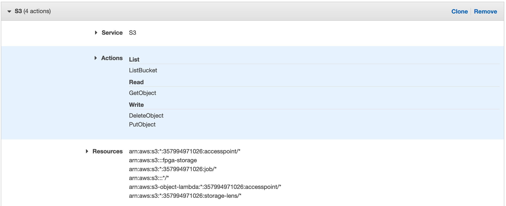
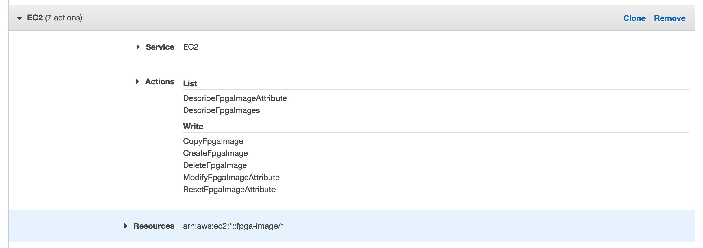
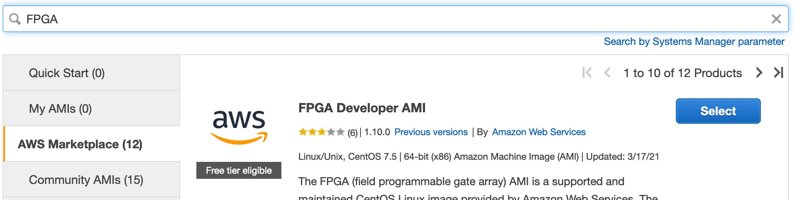

From Scratchː Neural Network Inference on FPGAs – Part 1
How to build FPGA applications on AWS
Deploying your deep learning models directly to edge devices comes with many advantages compared to traditional cloud deployments: Eliminating communication can reduce latency and reliance on the network connection; since the data never leaves the device, edge-inference helps maintaining user privacy; and since the amount of cloud resources is drastically reduced, edge-inference can also reduce ongoing costs. The proliferation of ML running on edge devices both drives and is driven by the development of specialized hardware accelerators such as GPUs, ASICs, or FPGAs. For an overview over the advantages and disadvantages of each hardware type see this series of posts or this article.
In this series of posts we will go over how to run inference for simple neural networks on FPGA devices.
As the title “from scratch” suggests, the main focus is on getting to know FPGA programming better and slightly lower its traditionally high barrier of entry.
This first post will go over the basic development by means of a simple example application running inference on a 2 layer fully connected network.
By using AWS’s F1-instances and their provided AMI with all the necessary software, all you need to follow is an AWS account.
With minor changes the example should also run on most Xilinx FPGAs.
Contents
Part 1: How to build FPGA applications on AWS (this post)
Part 2: A baseline implementation for fully connected networks
Programming FPGAs
One of the main challenges of using FPGAs is that their programming model is fundamentally different to most other “programming”:
Instead of generating instructions that are run by a processing unit, programming an FPGA means programming the actual hardware.
For this to make sense, we first need to understand what an FPGA is.
Highly simplified, an FPGA consist of many programable logic blocks such as look-up tables (LUT), memory, and reconfigurable connections between those building blocks.
Re-configuring the behavior of the logic blocks and the connections between them allows us to implement different digital circuits.
So the final “program” can be thought of a schematic that is implemented by the FPGA.
Traditionally FPGAs are programmed using a hardware description language such as Verilog or VHDL. These are quite different from popular programming languages, which is one major reason for the perceived high barrier of entry for FPGA programming. This barrier has been considerable lowered with the introduction of high-level synthesis (HLS) tools, which allow writing code for FPGAs in more mainstream languages such as C/C++. As it’s commonly the case, this increased abstraction and simplicity often comes at the cost of reduced efficiency of the resulting circuits. Therefore, for performance-critical implementations a good understanding of the underlying hardware layer is essential.
For our first implementation we will use Xilinx’ Vitis platform based on OpenCL: An OpenCL device such as an FPGA executes small programs called “kernels”. These kernels are managed and launched by the host device (CPU). By implementing these kernels using HLS, the implementation for FPGA looks remarkably close to what a similar implementation for CPUs would look like. The main difference is that the FPGA kernels are not simply instructions that are processed like on a CPU, but they are implemented as digital circuits on the device. So for example, if we want to run parts of the code in parallel, we can’t just run it in parallel on multiple cores; instead, we need to duplicate the physical circuit on the FPGA.
Note that Xilinx’ Vitis AI platform provides a ready-to-use runtime for common network architectures such as Resnets for image classification and single-stage object detectors such as SSD and Yolo. However, as of writing of this post, AWS F1 instances are not supported. In the future, I’d like to see how close simple implementations of the necessary layers can get to such a reference implementation efficiency-wise.
Setting up the development environment
The code accompanying this post can be found on GitHub. It this first technical part, we will go over how to run it. As the necessary software does not seem to be freely available, we will use the FPGA Developer AMI on AWS. You will need an AWS account with payments setup as free-tier machines are not powerful enough for this purpose.
The build scripts in this example are based on the official Vitis tutorials. However, these do not work out-of-the-box in AWS’ FPGA environment and require two changes:
- the
PLATFORMvariable needs to be set to$AWS_PLATFORM– an environment variable that set by the FPGA AMI, - the FPGA memory bank used needs to be changed in hardware-emulation mode.
The last sentence already brings us to one important point when it comes to working with FPGAs: Synthesizing the program for an actual hardware device can take a long time, even multiple hours and even for simple designs. That’s the reason why we will make extensive use of two different types of emulation.
First, in software-emulation mode, the kernels are compiled to native code and run directly on the CPU.
On one hand, this makes it very fast to compile and ideal during feature development to achieve a fast development cycle.
On the other hand, as actual schematic-synthesis is not necessary for this step, certain errors will not show up in software emulation.
Second, there is hardware-emulation mode that runs an actual synthesized schematic on a simulated device.
As this simulation is quite detailed, hardware-emulation runs much slower than software emulation.
It also adds additional compile time to the development cycle, but is still considerably faster than compiling for an actual FPGA.
On the plus side, hardware-emulation allows not just for functionality testing, but also allows probing the performance characteristics and resources demands for running on a physical device.
As neither emulation mode requires an FPGA, most development work can (and should) be done on a beefy CPU-only machine saving a lot of money in the process. We will only require an FPGA instance for the last bit of testing.
Setting up the EC2 instance
As mentioned in the previous section, most of the development work does not require an FPGA instance and can be done on general purpose instance types.
To follow this tutorial, you will need an S3 bucket (named fpga-storage here) and an EC2 instance with
- the AWS FPGA Developer AMI loaded,
- at least 16GB of RAM (e.g.
m5.xlargeinstance type or larger to speed up emulation), - an IAM role with read/write access to the S3 bucket and the following permissions:
DescribeFpgaImageAttribute DescribeFpgaImages CopyFpgaImage CreateFpgaImage DeleteFpgaImage ModifyFpgaImageAttribute ResetFpgaImageAttribute
In the remainder of this section we provide step-by-step instructions how to launch the required instance. Experienced AWS users can skip ahead to the next section.
- Create a new S3 bucket from the S3 management console.
Set the name to
fpga-storageand keep the default values for the remaining options. - From the IAM Policy creation create a new policy.
- For service select “S3”; for actions select “ListBucket”, “GetObject”, “PutObject”, and “DeleteObject”, and for resources select “Any” for all fields except “bucket”, for which you set the bucket-name to “fpga-storage”: 
- Click “Add additional permissions” and add the following permissions (also listed above) for the “EC2” service: 
- Continue through the screens until you end up on the “Review policy” screen. Enter “FpgaDevPolicy” as the name and finalize the role creation.
- You can now use the IAM role creation to create a new role.
- Select “AWS Services” → “EC2” as the trusted entity from the next screen.
- Choose the newly created “FpgaDevPolicy” from the list and continue until you reach the “Review role” screen. Enter the name “FpgaDevRole” and finalize the role creation.
- From the EC2 console, click “Launch instance”.
- In the AMI search bar, enter “FPGA” and select the AWS Marketplace from the menu on the left. Select the “FPGA Developer AMI” by AWS from the list. 
- Continue to the instance selection step. Choose the
m5.xlargeinstance type and click the “Next: Configure instance details” button. - Choose the created “FpgaDevRole” for the IAM role entry. Click “Add storage”.
- Delete the additional EBS volume and raise the size of the root partition to 200GB.
- Click “Review and Launch” and “Launch the instance”.
- If necessary, setup ssh authentication and ssh into the new instance using public IP displayed in AWS:
$ ssh -i ~/.ssh/PATH_TO_PRIVATE_KEY centos@xxx.xxx.xxx.xxx
Setting up the environment
Now that we are connected to the EC2 instance with the FPGA developer tools, we need to install some additional requirements:
$ sudo yum install cmake3 jq
$ git clone https://github.com/aws/aws-fpga ~/src/project_data/aws-fpga
The second line clones a repo with some additional helper scripts from AWS’ official github repo. We mainly need it to setup the development environment on the machine by running
$ source ~/src/project_data/aws-fpga/vitis_setup.sh
Note that the above command needs to be run every time when logging into the machine as it modifies the shell environment.
Running the examples
We are now ready to run the examples on this machine. For this, we are going to follow the normal development cycle: software emulation, hardware emulation, and finally compiling for the hardware device. To follow the following examples, you’ll need to clone the example repo
$ git clone https://github.com/dsuess/nn-on-fpgas -b part-1-v1 --recursive && cd nn-on-fpgas
Software Emulation
The fastest way to run the examples is using software emulation.
This compiles the kernels to native code and circumvents the circuit-synthesis completely.
In the build scripts, the compilation mode is controlled through the TARGET variable, which has three possible values sw_emu, hw_emu, and hw.
To compile the example in software emulation, we can simply run
$ mkdir build_sw && cd build_sw && cmake3 -DTARGET=sw_emu .. && make main kernels tests emconfig.json
In case this command raises an error, please make sure you followed the setup instructions above.
This builds all the necessary targets in the build_sw subdirectory:
mainbuilds example program,testsbuilds test suite for the kernels, andkernelsbuilds the kernel binaryxclbin/kernels.xclbin, andemconfig.jsoncontains information on the target hardware platform. The kernels (i.e. the basic mathetmatical operations that should run on the FPGA) are loaded by the application at runtime. We will look at these in more detail in the next part of this series.
We can now run the test or the example application:
$ XCL_EMULATION_MODE=sw_emu ./tests
$ XCL_EMULATION_MODE=sw_emu ./main
The latter should print 0 1 2 2 4 5 6 7 8 9 in the last line.
These are the class-predictions of the model when running on images for the classes 0 to 9.
The accuracy of the model is around 94% which is the reason we see a mistake for the label 3.
Hardware emulation
Building the kernels for hardware emulation simply requires changing the TARGRT variable:
$ mkdir build_hw && cd build_hw && cmake3 -DTARGET=hw_emu .. && make kernels tests emconfig.json
This command should be run from the root directory of the git repo. Note that compilation takes much longer compared to software emulation mode. The same is true for running the examples, which is why we only run the tests in hardware emulation:
XCL_EMULATION_MODE=hw_emu ./tests
Besides the binaries, hardware emulation also produces detailed reports on resource utilization and suggested changes in _x/reports.
We will come back to these diagnostics in a later part of this series.
Running on FPGA
Finally, we are now in a position to run the example on an actual FPGA hardware device:
$ mkdir build && cd build && cmake3 -DTARGET=hw .. && make kernels
This step will only build the kernel binary in xclbin/kernels.xclbin and may take over one hour to finish.
If you don’t want to wait that long, we provide a finished version of the binary as a Github Release.
On a standard Xilinx system we could directly run the kernels from the xclbin file.
However, AWS requires on additional step, namely converting the xclbin to an Amazon FGPA image (AFI).
The build steps are outlined in the offical AWS FPGA repo.
First, we need to set the default region to be used for the following commands to a region that supports FPGA instances (here us-east-1)
$ aws configure set default.region us-east-1
Now we can create the AFI image and save it to the S3 bucket fpga-storage, which we created during the initial environment setup:
$ $VITIS_DIR/tools/create_vitis_afi.sh -xclbin=xclbin/kernels.xclbin \
-o=xclbin/kernels \
-s3_bucket=fpga-storage -s3_dcp_key=kernels -s3_logs_key=logs
This will create a xclbin file xclbin/kernels.awsxclbin, which should be loaded by the runtime instead of the xclbin/kernels.xclbin when running on F1 instances.
In our standard runtime, this is automatically done based on compile time flags.
We copy this file to the S3 bucket for later use.
$ aws s3 cp xclbin/kernels.awsxclbin s3://fpga-storage/
Additionally, there’s should be a *_afi_id.txt file created that contains the AFI ID.
Using the AFI ID, we can check the status of the conversion processes running in the background:
$ export AFI_ID=$(cat *_afi_id.txt | jq -r ".FpgaImageId")
$ aws ec2 describe-fpga-images --fpga-image-ids $AFI_ID
Note that when running the create_vitis_afi.sh script multiple times, multiple files that fit the glob-pattern of the first command will be in the directory.
Either choose the correct one by hand or delete all of them and re-run the script.
Once the state code outputted by the describe-fpga-images command changes from “pending” to “available”, we are ready to finally run the example on an FPGA hardware device.
For this, follow the original setup steps, but choose an F1-instance type.
After cloning the example repo, we need to build everything except the kernels
$ mkdir build && cd build && cmake3 -DTARGET=hw .. && make emconfig.json main tests
We can simply copy the AFI kernel binary from S3
$ mkdir xclbin && aws s3 cp s3://fpga-storage/kernels.awsxclbin xclbin/
And run both the tests and the example application on the FPGA:
$ ./tests
$ ./main
Conclusion
This finished the first post in the “From Scratch: Neural Network Inference on FPGAs” series, which covered the basics in how to develop applications for FPGAs. In the next post we will look at the implementation in a bit more detail.
Cover Image by Pedant01 CC BY-SA 4.0
{kind=link}